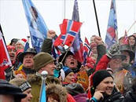
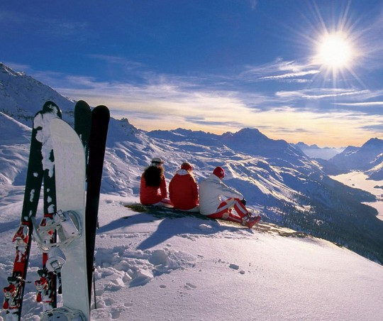

Лыжные курорты
 Популярность лыжного спорта поддерживается его массовостью, в первую очередь, через отдых и лыжные курорты.
Норвегия с каждым все более активно привлекает на свои горнолыжные курорты отдыхающих. Секрет популярности горнолыжных курортов Норвегии заключается в сочетании потрясающей природы, гарантированного снега в начале и в конце сезона, прекрасных возможностей для отдыха с детьми и великолепного сервиса. Здесь оптимально сочетаются уют, порядок, доброжелательность, и умение радоваться жизни. Норвегия гордится не только самым высоким в мире уровнем жизни, но и тем, что именно в ней появились первые горные лыжи. С Норвегией связано много заблуждений. Жители других стран почему-то считают, что в этой стране экстремальный холод и белые медведи. Это неверно. Хотя в Норвегии есть районы, находящиеся за Полярным кругом, и в ней можно наблюдать северное сияние, но все популярные горнолыжные курорты находятся в южной части страны. Столбик термометра крайне редко опускается ниже отметки -15 градусов, а средняя температура воздуха зимой и вовсе составляет комфортные -6 градусов. Горнолыжные курорты Норвегии с каждым годом набирают популярность.
Город Лиллехамер –это самый известный в мире горнолыжный регион Норвегии, у которого даже на гербе изображен лыжник. Он расположен в 187 км от Осло на берегу крупнейшего озера в Норвегии – Мьёса.
Лиллехамер считается одним из лучших мест зимнего отдыха в Скандинавии, так размещение в городе позволяет максимально разнообразить отдых. В регион Лиллехамер входит несколько курортов- Хафьель, Квитфьель и Хемседал.
 Хафьель находится в 15 км от Лиллехамера и в 2 часах езда от аэропорта Осло. Он считается самым старым горнолыжным курортом Норвегии, так как был основан еще в 1939 году. Хафьель находится ближе всего к Лиллехамеру и , поэтому, весьма популярен и у норвежцев, и у туристов.
Именно на этом курорте, благодаря перепаду высот в 830 метров, проложена трасса скоростного спуска FIS, существует система ночного освещения, а снежные пушки обеспечивают гарантию превосходного снежного покрова.
Курорт великолепно приспособлен для катания с детьми и их обучения. Здесь есть 3 детских подъемника, открыты горнолыжный детский сад и школа, на курорте работают опытные инструкторы, говорящие на разных языках. Для самых маленьких детей оборудованы ясли с большим выбором игрушек. Детская зона катания максимально безопасна и позволяет в игровой форме научить малышей уверенно чувствовать себя на лыжах..
В Хафьель также расположен сноуборд-парк «Хафьель Паркен» где имеется практически все возможное для этого вида спорта: 15 трамплинов, 6 рейлов , хайфпайп, минипайп, биг джамп и пр. Трассы-трамплины имеют различные уровни сложности – зеленый (длина 3-5 м), красный (длина от 10 м) и черный (длина от 15 м).
Хафьель находится в 15 км от Лиллехамера и в 2 часах езда от аэропорта Осло. Он считается самым старым горнолыжным курортом Норвегии, так как был основан еще в 1939 году. Хафьель находится ближе всего к Лиллехамеру и , поэтому, весьма популярен и у норвежцев, и у туристов.
Именно на этом курорте, благодаря перепаду высот в 830 метров, проложена трасса скоростного спуска FIS, существует система ночного освещения, а снежные пушки обеспечивают гарантию превосходного снежного покрова.
Курорт великолепно приспособлен для катания с детьми и их обучения. Здесь есть 3 детских подъемника, открыты горнолыжный детский сад и школа, на курорте работают опытные инструкторы, говорящие на разных языках. Для самых маленьких детей оборудованы ясли с большим выбором игрушек. Детская зона катания максимально безопасна и позволяет в игровой форме научить малышей уверенно чувствовать себя на лыжах..
В Хафьель также расположен сноуборд-парк «Хафьель Паркен» где имеется практически все возможное для этого вида спорта: 15 трамплинов, 6 рейлов , хайфпайп, минипайп, биг джамп и пр. Трассы-трамплины имеют различные уровни сложности – зеленый (длина 3-5 м), красный (длина от 10 м) и черный (длина от 15 м).
Горнолыжный курорт Квитфьель находится в 50 км от Лиллехамера и считается одним из лучших в Норвегии курортов из-за разнообразия трасс и их качества. Квитфьель может похвастаться наибольшим числом лыжных дней в годуи самым большим районом для беговых лыж - более 600 км трасс для любого стиля.
На курорте можно выбрать практически любой вариант размещения, от просто коттеджа до комфортабельного отеля. Как на многих курортах Норвегии, в Квитфьеле очень хорошие возможности для отдыха после катания. На курорте существует хороший выбор ресторанов с неожиданным меню и богатым выбором вин. В течение всего сезона на курорте проходит множество мероприятий на любой вкус, а список того, чем можно заняться помимо лыж, весьма впечатляет.
Хемседал – второй по величине и первый по популярности в Норвегии горнолыжный курорт. Это место называют «Северным Шамони» и «Скандинавскими Альпами». Пейзажи курорта меняют свои очертания мере того, как подъемник доставляет туристов к пику Тоттен (1497 м) – самой высокой горе курорта. Две другие вершины - Тинден (1444 м) и Рогьин (1370 м) - формируют весьма живописный пейзаж, напоминающий Альпы.
В Хемседале есть несколько зон катания, соединенных между собой трассами и подъемниками. Курорт предлагает 48 трасс различного уровня сложности и 3 сноу-парка, которые считаются очень модным местом среди молодежи.
Хемседал весьма популярен среди начинающих горонолыжников и семей с детьми. Детский парк Trollia предлагает набор развлечений и присмотр за детьми уже с 3-месячного возраста. На курорте есть многочисленные детские зоны катания, в которых есть 6 спусков, 7 подъемников, детский трамплин, рэйлы, слаломная трасса со звуковым оформлением, горки для катания, сказочный лес и юрта с костром, киоск с напитками и сладостями. В Хемседале практически все сотрудники говорят по-английски, а выбор развлечений после катания весьма разнообразен. На курорте работают 14 ресторанов, 12 баров и кафе, есть ночные клубы.
Гейло – это идеальный семейный курорт, один из лучших в Северной Европе. Этот домашний и гостеприимный городок расположен между двумя главными городами Норвегии – Осло и Бергеном.
Курорту уже более 100 лет. Именно здесь были обнаружены легендарные наскальные рисунки с лыжниками. В Гейло находятся 40 км трасс разных категорий сложности для лыжников всех уровней, включая детские трассы и черные спуски для экспертного катания. Трассы не слишком протяженные, но очень удобно спланированные и идеально приспособленные для семейного катания. Особое внимание уделяется занятиям с детьми, на которых осваиваются горные лыжи, проводятся различные конкурсы, представления, соревнования и прочие развлечения.
Трюсиль - самый крупный горнолыжный курорт в Норвегии.
Трюсиль расположен в центре Скандинавии, в удивительно красивой местности. Климат региона признан лучшим в Европе из-за массивного пояса хвойного леса. Климат Трюсиля считается одним из самых стабильных в Скандинавии.
Сноубордисты могут по достоинству оценить лучший сноупарк Норвегии – знаменитый Trysil Terrain Park. Здесь два хаф-пайпа и масса рейлов, вылетов и трамплинов для сумасшедших трюков. Для самых маленьких гостей курорта выделено 3 зоны.
В Трюсиле можно жить в коттедже прямо на слоне горы, где лыжные трассы начинаются сразу у порога. Можно остановиться в отеле или симпатичных домиках в старинном норвежском стиле в самом городке. Такой вариант больше подходит тем, кто захочет оказаться поблизости от боулинг-центра, кинотеатра, ресторанов и ночных клубов.
Ближайшая к Бергену, главному городу региона, лыжная зона, расположена как раз между двумя главными норвежскими фьордами – Хардангером и Согне-фьордом. Из Бергена сюда можно добраться на поезде с пересадкой в Myrdal, где надо будет сесть на поезд знаменитой Фломской железной дороги: одна из самых крутых в мире, она проходит сквозь два десятка тоннелей и взбирается на такие кручи, что голова начинает кружиться. Кроме того, в сезон сюда возит регулярный автобус, но лучше всего взять машину – тогда можно будет не только осмотреть все достопримечательности, но и покататься сразу на всех местных курортах.